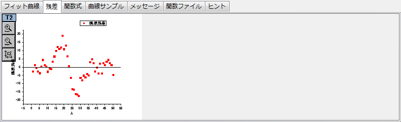

<h1 class="firstheading">『残差』タブ (下側パネル)</h1>
<p class="urlname" style="display: none;">NLFit-Dialog-ResidualTab</p>
<p>「残差」タブを使って、残差プロット(残差と独立変数)を表示します。</p>
<dl>
<dd><a class="image"></a></dd>
</dl>
<p>以下もご覧下さい。</p>
<ul>
<li><a href="../../UserGuide/UserGuide/Graphic_Residual_Analysis.html" title="ユーザガイド:グラフィカルな残差解析">残差解析</a></li>
</ul>
